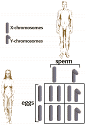

Human Genetics Problem Set
Problem 9 Tutorial: Sex determination in humans
| Why would you predict that half of the human babies born will be males and half will be females? |
|
Sex-determination in humans is based on the X and Y sex chromosomes. Females are XX, and normal female eggs contain only an X- chromosome. Males are XY.
Normal meiosis in males leads to the production of an equal number of sperm with an X or a Y chromosome. Half of the time the egg is fertilized by a sperm with an X-chromosome resulting in an XX female zygote, and half of the time the zygote is XY. Note that the sex of the offspring is determined by the male gamete, and not the female gamete. |
 |


University of Arizona
Revised: November 5, 1998
Contact the Development Team
http://biology.arizona.edu
All contents copyright © 1996-98. All rights reserved.